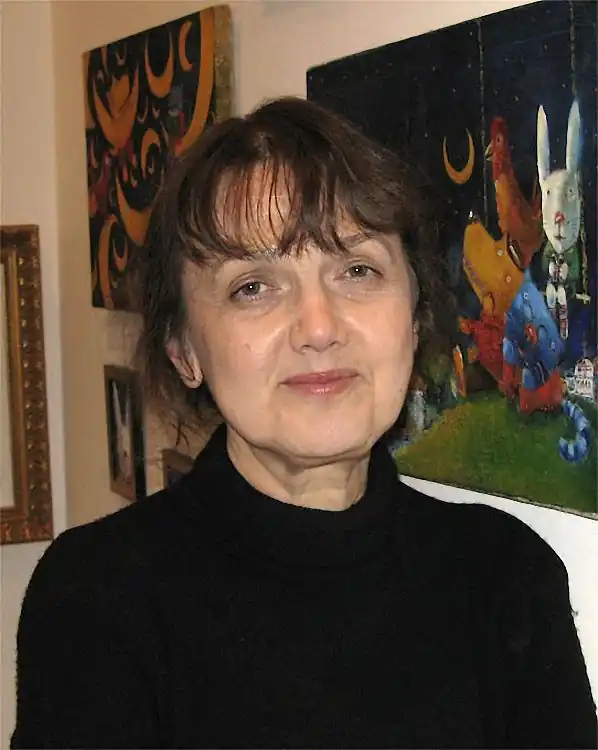
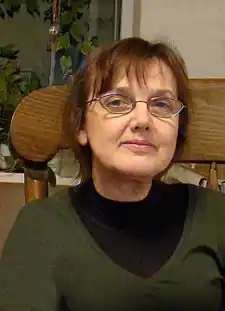
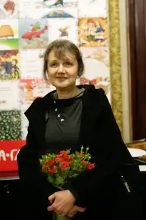

Штанко Катерина Володимирівна — український художник-ілюстратор. Член Національної спілки художників України з 1985 року. Працює разом з чоловіком, також художником.
Народилася Катерина Володимирівна Штанко в Сімферополі 24 липня 1951 року.
У 1969-1973 роках — вчилася в Кримському художньому училищі. У 1973-1979 — студентка Київського державного художнього інституту (нині Українська Академія Мистецтв), факультет графіки, викладачі — Василь Чебаник і Галина Галинська. У 1979 році, відразу після закінчення інституту, почала працювати у видавництві "Веселка", ілюструвала журнал "Соняшник". Наповнені світлом і золотом її роботи подобаються як дорослим, так і дітям. У 1979-1983 роках — навчання в аспірантурі при Академії образотворчих мистецтв (Академічні художні майстерні). Член Національної спілки художників України з 1985 року. Учасниця і переможець багатьох республіканських, всесоюзних і міжнародних виставок. Автор кількох десятків ілюстрованих книг для дітей. Співпрацювала з видавництвами "А-ба-ба-га-ла-ма-га", "Грані-Т", "Видавництво Старого Лева", "Марка України", "Веселка", "Дніпро" та ін. В даний час почала займатися казковим письменництвом. У видавництві Івана Малковича вийшов її роман "Дракони, вперед!" Твір отримало доброзичливі відгуки української казкарки Лесі Ворониної.